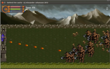
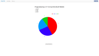
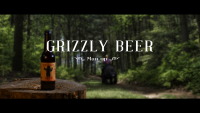
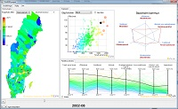

Programming skills
I speak:
C++
Python
Matlab
Java
Employment
Scientific Visualization Group, Linköping University 2013-Present
Developing a tool for scientific visualization. My role in the project is programming GUI widgets using C++ with Qt
KeyPlan Solutions 2012
Ported their website to wordpress and also some SEO reasearch
Education
Linköping University 2009-2014
Master of Science (M.Sc.), Computer Science and Media TechnologyHere is a selection of some of the courses
- Advanced Image Processing
- Image Processing and Analysis
- Design Patterns
- Network Programming and Security
- Advanced Web Programming
- Data Structures
- Information Visualization
- Software Engineering
- Scientific Visualization
- Communication and User Interfaces
Portfolio
Multimedia Programming in Python 2013

A game written in Python using the library PyGame. It is a "Defend the castle" game where you shoot monsters to protect your castle. After killing a wave of monsters the next level begins with more monsters
view on github [Gameplay video]
Advanced Web Programming 2013

A webb project written in Django and Ember.js. Django did just serve as a REST Api using Tastypie, everything else is done with Ember.js on the client side with some javascript plugins.
[Screencast in swedish]
Project Management for Audiovisual Media Production 2013

Project manegement project for producing a commercial. The project combines traditional video with computer graphics, all scenes execpt the ones in the kitchen were shot infront of a green screen.
[Full movie] [30 sec version]
Advanced Image Processing - Face recognition 2012
The task for the project was to implement software for face recognition using matlab. The task requierd solutions of multiple sub problems such as pre-processing, face detection, feature extraction and decision theory. From an imput image of an unknow face, the program should detect the face, extract relevant features and make a decision if the person in the image belongs to a knows person, and if so, to whom?
[Report in swedish]
Information Visualization 2012
The task for the project was to visualize data related to municipalities of Sweden. The data of choice to visualize was reported crimes and socio-economic conditions.
[Report in english]